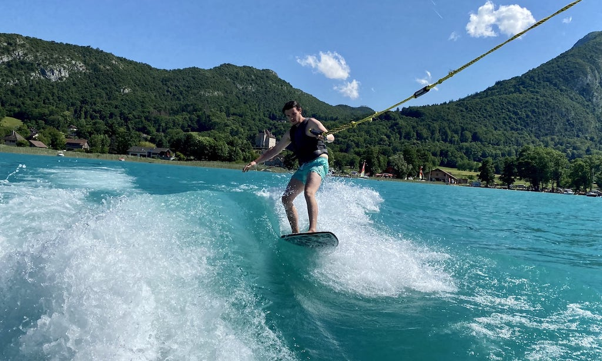
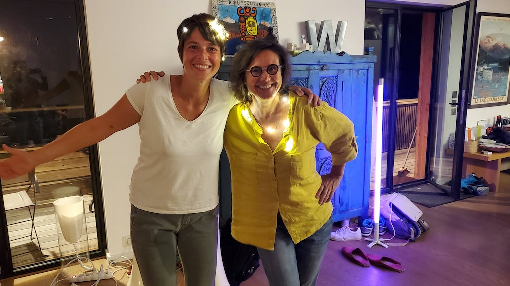
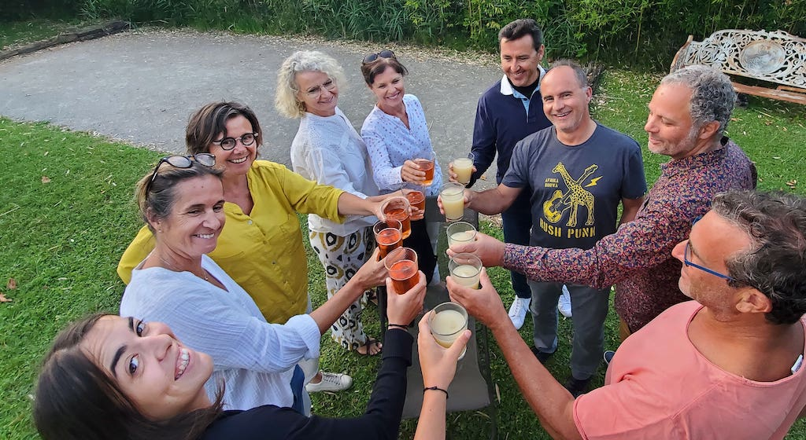

Programme
Après un mariage civil à Paris en mai, nous avons hâte de célébrer notre union avec vous !
La journée débutera par une cérémonie laïque où l'on rira et
l'on pleurera au gré des interventions. Un déjeuner sera ensuite organisé
sur la terrasse, au soleil (Inch Allah) avec vue sur les montagnes. L'après-midi sera libre mais
nous
aimerions vous garder dans l'ambiance de festival où l'on s'est connus (au We Love
Green). Tout ça dans
la maison des
rêves d'Yves et Isabelle (appelée Woodstock -- c'est littéralement un tas de bois)
Nous nous retrouverons ensuite au Buloz, à la maison de Mamie Françoise où la grande cousinade
Schmidt
a vécu tant de beaux moments. Le cocktail permettra à ceux qui avaient fait une
pause à midi de se
se remettre en jambe avant un dîner à table sous la tente et pour bien préparer la
soirée qui
suivra !
Le lac : pendant le festival, il y aura de la musique, de la pétanque, du mölkky
et... de la baignade pour les amateurs. À vos maillots et serviettes !
Dress code : Vous êtes beaux, venez comme vous êtes ! Mais ce n'est pas une banquise
de
pingouins, on
évitera simplement les costumes-cravates sombres, soyez colorés !
À propos de talons : la matinée aura une bonne dose de pelouse et le cocktail aura
lieu dans une cour de graviers. Talons plats/carrés/compensés conseillés !
Déplacements : le Buloz est à environ 2km de Woodstock. Nous mettrons des navettes à
disposition pour vous ramener chez vous le soir mais il vous faudra prévoir de monter au
Buloz par vos propres moyens pour la soirée.
Pitchounes : Woodstock est bordée par une rivière non protégée et un lac pas mal
profond. Les bambins ne sont donc pas conviés.
(Les horaires sont pour l'instant tout à fait indicatifs, on va ajuster dans les mois qui
viennent !)
11h30
Cérémonie laïque dans le jardin
12h30
Déjeuner sur la terrasse
14h00
Festival au soleil (Inch'Allah) : musique d'ambiance, lac, bière et
jeux dans le jardin
Saint Jorioz
Nous vous attendons à Saint-Jorioz, en Haute-Savoie, où nous avons passé tant de bons moments,
souvent grâce à vous. Et si c'est votre première fois, pas d'inquiétude, vous ne serez pas déçu !
Woodstock
Pour la cérémonie , le déjeuner et le festival
(voir
programme ) nous vous accueillerons chez les charmants Yves & Isabelle au
139 Impasse des Roseaux, 74410 Saint-Jorioz
En zoomant sur la carte ci-dessus, vous trouverez des indications pour vous garer près de Woodstock.
Buloz
Pour le cocktail , le dîner et la soirée (voir
programme ) nous vous accueillerons chez la douce Françoise au
401 Chemin du Buloz, 74410 Saint-Jorioz
En zoomant sur la carte ci-dessus, vous trouverez des indications pour vous garer près du Buloz (dans
le champs du voisin) puis comment marcher jusqu'à la maison.
Dormir
Vous trouverez facilement sur les sites classiques (Airbnb, Booking, Abritel etc.) des logements dans
les environs. Mais comme on vous aime vraiment beaucoup, on a regroupé quelques adresses ici.
Notez que cette liste est en construction, on va continuer à ajouter des choses, mais que le plus tôt
sera le mieux ! Les bords du lac sont pris d'assaut à l'été donc
une réservation après Mars est considérée comme tardive, surtout autour d'un joli pont comme
celui qui nous attend.
Nous organiserons un service de navettes pour vos retours de la soirée donc pas de panique
si vous ne trouvez pas dans un rayon acceptable à pied du Buloz
> Cliquez ici pour consulter le
Google Doc
des
logements
RSVP
Nous serions heureux de vous avoir avec nous pour ce moment si important, dites nous si et quand vous
pouvez vous joindre à nous !
Merci de remplir ce formulaire individuellement , tous les invités ont reçu un mail.
En cas de doute pour votre +1 demandez nous :)
Dans les environs
Comme y'a des montagnes, y'a d'la rando (itinéraires de randonnées et
balades
de la Via Ferrata (à Thônes par exemple)
du parapente au Col de la Forclaz
et les plus courageux y monteront en vélo (à louer ici ou là par exemple) !
Mais il y a aussi un lac, et donc des bains, même la nuit,
des barques, du pedalo
du kayak

et du wakeboard au Ponton de
l'Embarcadère !
Et puis on peut aussi préférer faire un tennis
un padel
un dîner à Annecy

une soirée colorée
ou jeux de société
ou faire un bridge en ligne à
l'ombre !
Avec un peu de détermination
on peut passer de merveilleux moments
à rêver
golfer
se balader
jouer dans l'herbe
protéger la maison des inondations

et surtout, boire des coups !
Liste de mariage
Pour célébrer notre mariage, nous voulons voyager quelques mois en
Asie üåè apr√®s la th√®se de Victor.
Et peut être même nous acheter ensuite de quoi meubler notre futur chez nous à notre retour en
France üá´üá∑
Merci pour votre contribution ❤️
Partagez vos photos du mariage !
En cliquant sur le lien ci-dessous, vous pourrez voir les photos prises par les autres invités et
y ajouter les vôtres !
Album
photos du Wooding
Nous partagerons également les photos prises par le photographe ici.
Merci d'avoir répondu !
Si les informations que vous nous avez communiquées venaient à changer, vous pourrez remplir le
formulaire à nouveau.
Erreur
Oups il y a eu une erreur dans le formulaire
Merci de prévenir Victor avec le contenu du formulaire problématique.